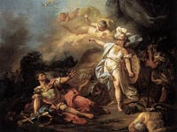

Марс, в римській міфології бог війни, найдавніше божество Італії та Риму, яке входило в тріаду богів, спочатку очолювали римський пантеон, - Юпітер, Марс і Квирин. У давнину він вважався богом родючості та рослинності, але поступово придбав войовничий характер. Марс супроводжував йдуть на війну воїнів, брав жертовні дари перед битвою і з'являвся на полі брані в супроводі богині війни Беллона.
Символом Марса було спис, що зберігалося в царському палаці - Регін; там же зберігалися дванадцять щитів, один з яких, за переказами, впав з неба як заставу непереможності римлян, а решта були сто майстерними копіями, покликаними спантеличити викрадачів.
Полководець, вирушаючи на війну, він кликав до Марсу, приводячи в рух розвішані в палаці щити і спис. Після закінчення військових дій богу війни приносили в жертву коня з перемогла на бігах квадриги. Великою популярністю користувався Марс в період Республіки: його зображення карбувалися на монетах, бога нагороджували епітетами "переможець", "бореться", "розширює імперію", "умиротворитель". У західних римських провінціях з образом Марса пов'язували головних богів територіальних і племінних громад. Саме тому деякі дослідники припускали, що ранні римські уявлення про Марсі як про верховному божество продовжували жити в народних переказах.
Богу війни Марсу в давньогрецькій міфології відповідає бог Арес. Але відміну від грецького Ареса, Марс шанувався в Римі вище інших богів, можливо тому, що, за легендами, його сини Рем і Ромул заснували це місто. Вважалося, що Марс був наділений трьома життями.